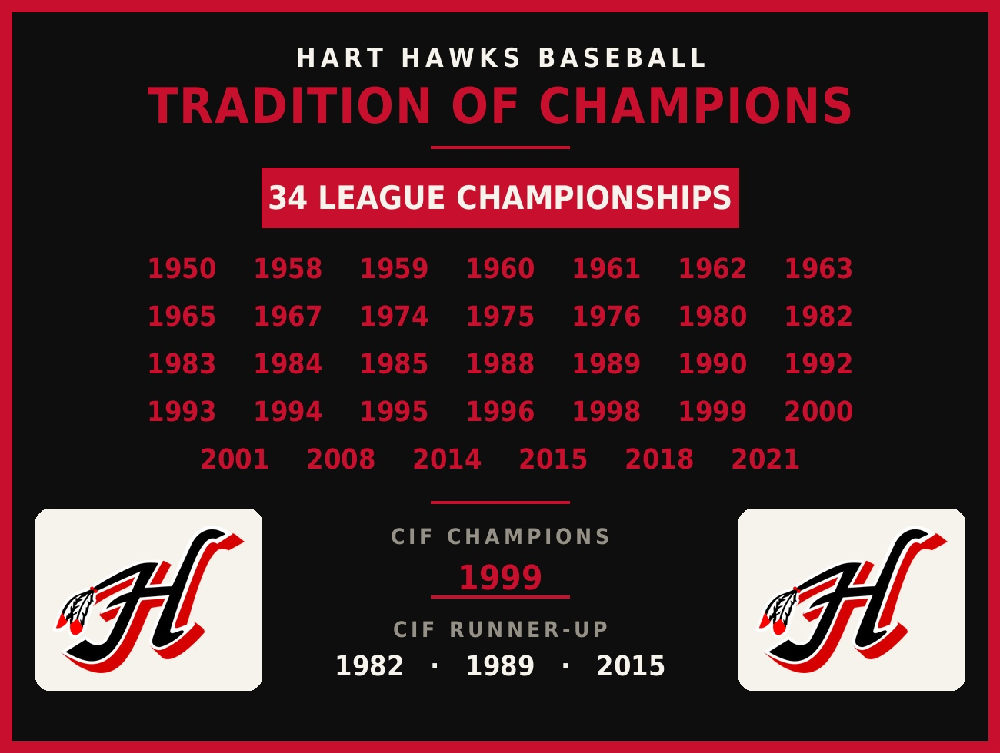

The story, the honorees, and the tradition of Hart Hawks Baseball.
Hart Hawks Baseball has been part of William S. Hart High School since 1948, built by the players who wore the uniform, the coaches who shaped them, and the families who showed up year after year to fill the stands.
Across the decades, the program has claimed 34 league championships, 2 CIF championships, and 3 CIF runner-up finishes — a tradition documented in full on the Tradition of Champions banner below.
After a 25-year career leading the program, Coach Jim Ozella passed the torch in 2024 to Hart Baseball alumnus Brad Meza, who now carries that tradition forward as Head Coach.
